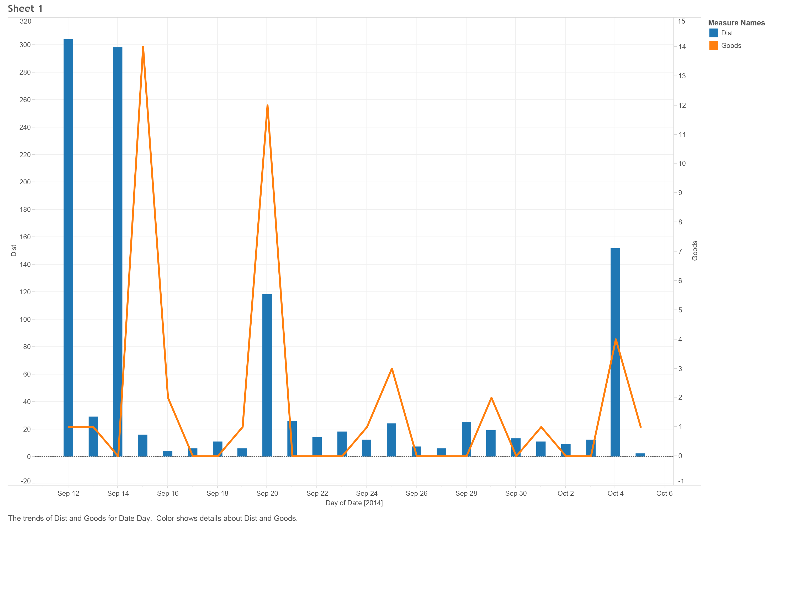
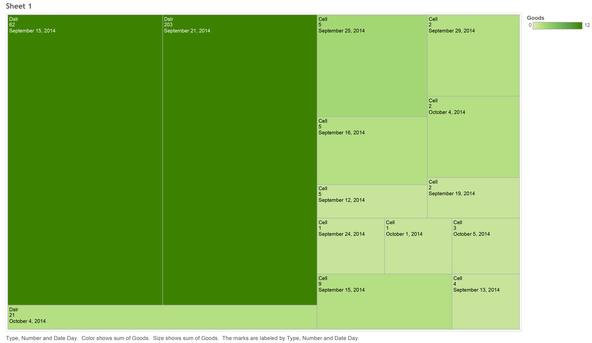

A Brief Introduction
How do you spend your time? What do you do with your time? Are you satisfied, or do you feel unfulfilled? I enjoy adventurous hobbies, particularly landscape and astrophotography. However, I found that much of my time was taken up by various electronic devices. I work with computers, I study computers, and I'm almost always on my cell phone. I decided to track my device usage and try to determine the impact on my photography.
Technologies Used
Various technologies were involved in the data collection, processing and analysis, and subsequent visualizations.
- Data Collection
- Rescue Time
- Collection and Analysis of cell phone, work laptop, and home desktop usage. Analyzed for productive/ recreational usage
- Google Location Services
- Track geographic location data
- Moves
- Smartphone app for more location data
- Processing and Analysis
- Excel
- Data conversion and comparison
- Tableau
- Graphical analysis and visual design
- Data Visualization
- Rescue Time
- Charts/graphs
- Tableau
- Charts/graphs
- d3.js
- Photo location processing and visualization
Let's see some data!
Jump in, the water's fine.
Perhaps the most important part of this experiment was to find how much time I spent per week on a digital device, and how much of that was productive time. I logged most of this via the RescueTime app
Week One
RescueTime
Week Two
RescueTime
Week Three
RescueTime
Moves
Moves is an iPhone/Android app that tracks your movements. I used this information to visualize the correlation between distance travelled and number of "good" photos, subjectively chosen by myself.
This particular dataset was the most interesting discovery I made. There seems to be absolutely no correlation between the distance I travelled and the number of good photographs I made. Simply walking around netted more good photographs than I took on a 120-mile round trip drive. However, we can dig a little deeper into the number of photgraps shot, and see if there is any comparison there.
This graphic shows that there is a significant asswociation not just with the method of photography (Dslr or cell phone), but with the number of photographs taken. I built this in Tableau, and couldn't find a way to make it quite as clear as I would have liked, however the text rows in each cell follows the following format: method of photography, number of photographs, and date shot. Note that some dates repeat. This is because I felt it was important to seperate the methods, rather than consolidate them.
Where I went
Movement
Photo Locations
So What?
And it doesn't look like we learned much!